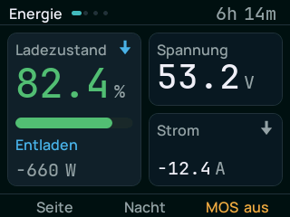
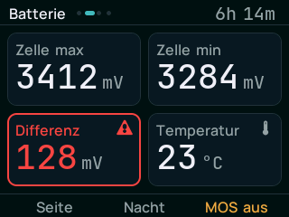
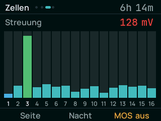
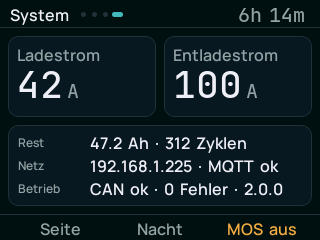
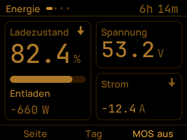
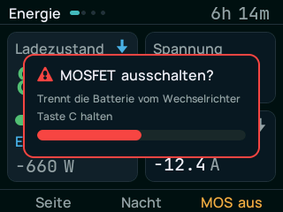

Adapter zwischen einem DALY/Deligreen Smart BMS und einem SOLIS-Hybrid-Wechselrichter, auf einem M5Stack Core Basic. Liest das BMS über UART, regelt Lade- und Entladestrom anhand der höchsten Zellspannung und meldet den Pylontech-Datensatz über CAN.
Firmware direkt aus dem Browser aufspielen
Version 2.0.0 · ESP32 · 1,4 MB
usbserial im Namen).Erst lesen, wenn eine echte Batterie dranhängt.
Diese Firmware steuert Lade- und Entladestrom einer LiFePO4-Hausbatterie. Die
Schwellen sind auf einen 16s-Aufbau mit DALY-BMS und einen SOLIS RHI-4.6K-48ES-5G
eingestellt und stammen aus einem im Feld erprobten Vorgänger. Wer einen anderen
Aufbau hat, muss sie in main/app_config.h prüfen, bevor er den
Wechselrichter anschließt. Ohne Gewähr.
Eine Datei config.txt im Wurzelverzeichnis der SD-Karte, danach das
Gerät neu starten. Die Werte werden zusätzlich im internen Speicher abgelegt, das
Gerät startet also auch ohne Karte weiter.
wifi_ssid=
wifi_password=
mqtt_ip=
mqtt_port=1883
mqtt_user=
mqtt_password=Ohne WLAN und MQTT läuft der Adapter vollständig weiter — Netz ist nur für Home Assistant und Funk-Updates nötig.





